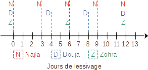
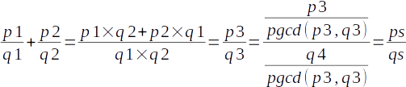

Najla, Douja et Zohra ont fait leurs lessives aujourd’hui. Or, Najla fait sa lessive
tous les 3 jours, Douja tous les 4 jours et Zohra
tous les 6 jours.
Lessive
Questions
Combien passera-t-il de temps avant que les trois femmes ne refassent leurs lessives le même jour ?
En supposant que :
Najla fait la lessive tous les lf1 jours. Avec lf1 > 0
Douja fait la lessive tous les lf2 jours. Avec lf2 > 0
Zohra fait la lessive tous les lf3 jours. Avec lf3 > 0
Déterminer quand les trois femmes referons leurs lessives le même jour ?
Ecrire l'algorithme d'un programme pour résoudre ce problème.
Solutions
On pourra déterminer graphiquement le temps requis pour voir les trois femmes faire leurs lessives le même
jour. Et ce en utilisant l'échelle temporelle suivante :

Jours de lessive
On en déduit qu'il faudra attendre 12 jours.
On remarque que le temps requis pour voir les trois femmes faire leurs lessives dans une même journée peut
être calculé en utilisant la formule suivante :
PPCM = Plus Petit Commun Multiple, c'est le plus petit nombre qui est multiple des trois nombres
L'algorithme de cette situation peut être écrit de deux façons :
1ère façon : méthode classique
Algorithme Lessive
Début
// Saisie du jour de lessive de chaque femme
Répéter
Ecrire("Lessive femme 1 ? ") ; Lire(lf1)
Jusqu'à (lf1 > 0)
Répéter
Ecrire("Lessive femme 2 ? ") ; Lire(lf2)
Jusqu'à (lf2 > 0)
Répéter
Ecrire("Lessive femme 3 ? ") ; Lire(lf3)
Jusqu'à (lf3 > 0)
// Après combien de jours la 2ème et la 3ème femme font leurs lessives
p1 ← lf2
TantQue p1 mod lf3 ≠ 0 Faire
p1 ← p1 + lf2
Fin TantQue
// Après combien de jours les 3 femmes font leurs lessives
p2 ← lf1
TantQue p2 mod p1 ≠ 0 Faire
p2 ← p2 + lf1
Fin TantQue
ltf ← p2
// Affichage du résultat
Ecrire("Toutes les femmes feront leurs lessives après", ltf, "jours")
Fin
Algorithme Lessive2
Début
// Saisie du jour de lessive de chaque femme
saisie("Lessive femme 1 ? ", lf1)
saisie("Lessive femme 2 ? ", lf2)
saisie("Lessive femme 3 ? ", lf3)
// Après combien de jours les 3 femmes font leurs lessives
ltf ← ppcm(lf1, ppcm(lf2, lf3))
// Affichage du résultat
Ecrire("Toutes les femmes feront leurs lessives après", ltf, "jours")
Fin
TDOG
Objet
Type/Nature
lf1, lf2, lf3, ltf
entier
Procédure saisie
procédure saisie(msg: chaîne, @nj: entier)
Début
Répéter
Ecrire(msg)
Lire(nj)
Jusqu'à (nj > 0)
Fin
TDOL
Objet
Type/Nature
-
-
Fonction ppcm
fonction ppcm(a, b: entier):entier
Début
p ← a
TantQue (p mod b ≠ 0) Faire
p ← p + a
Fin TantQue
retourner p
Fin
En mathématiques, une fraction est irréductible s'il n'existe pas de fraction égale ayant
des termes plus petits. Autrement dit, une fraction irréductible ne peut pas être
simplifiée.
Théorème
Soient a un entier et b un entier naturel non nul. Alors est irréductible si et
seulement si
a et b sont premiers entre eux.
Exemple
La fraction n'est pas
irréductible
car 12 et 20 sont des multiples de 4 : (simplification par 4).
On peut aussi écrire .
La fraction est
irréductible car 1 est le seul entier positif qui divise à la fois 3 et 5.
Méthode de simplification
Pour réduire directement une fraction, il suffit de diviser le numérateur et le dénominateur par leur
plus grand commun diviseur. D'après le lemme de Gauss, cette forme réduite est unique.
Exemple
Pour réduire la fraction , on
calcule puis on
simplifie par 6
: .
Problème
On souhaite écrire l'algorithme d'un programme modulaire qui calcule la somme de deux
fractions :

Somme de deux fractions avec : p1, p2, ps ∈ 𝕫 et q1, q2, qs ∈ 𝕫*
Solutions
Solution non modulaire
Algorithme Somme_Fraction
Début
// Saisie de p1 et q1
Ecrire("Fraction : p1 / q1")
Ecrire("Numérateur ? ") ; Lire(p1)
Répéter
Ecrire("Dénominateur ? ") ; Lire(q1)
Jusqu'à q1 ≠ 0
// Saisie de p2 et q2
Ecrire("Fraction : p2 / q2")
Ecrire("Numérateur ? ") ; Lire(p2)
Répéter
Ecrire("Dénominateur ? ") ; Lire(q2)
Jusqu'à q2 ≠ 0
// Calcul de la somme des deux fractions
ps ← p1 * q2 + p2 * q1
qs ← q1 * q2
// Calcul du PGCD(ps, qs)
a ← ps
b ← qs
TantQue b ≠ 0 Faire
r ← a mod b
a ← b
b ← r
Fin TantQue
// Simplification
ps ← ps div a
qs ← qs div a
// Affichage
Ecrire(p1, "/", q1, "+", p2, "/", q2, "=", ps, "/", qs)
Fin
Deux nombres entiers naturels distincts sont dits « amicaux » (ou « amiables ») si la
somme des diviseurs stricts de l'un est égale à l'autre et réciproquement.
Les diviseurs de 10 sont 1, 2, 5, 10. Les diviseurs stricts de 10 sont 1, 2, 5.
Travail demandé
Chercher la liste des diviseurs stricts de 220 et de 284.
Vérifier que 220 et 284 sont deux nombres amicaux.
Ecrire l'algorithme d'un programme qui vérifie si deux nombres données sont amicaux.
Algorithme amicaux
Début
// Saisie de deux nombres strictement positifs
Répéter
Ecrire("Donner n ? ") ; Lire(n)
Jusqu'à (n > 0)
Répéter
Ecrire("Donner m ? ") ; Lire(m)
Jusqu'à (m > 0)
// calcul de la somme diviseurs de n
sn ← 0
Pour i de 1 à n div 2 Faire
Si n mod i = 0 Alors
sn ← sn + i
Fin Si
Fin Pour
// calcul de la somme diviseurs de m
sm ← 0
Pour i de 1 à m div 2 Faire
Si m mod i = 0 Alors
sm ← sm + i
Fin Si
Fin Pour
// Affichage du résultat
Si (n = sm) et (m = sn) Alors
Ecrire(n, "et", m, "sont amicaux.")
Sinon
Ecrire(n, "et", m, "ne sont pas amicaux.")
Fin Si
Fin
TDO
Objet
Type/Nature
n, m, i, sn, sm
entier
Travail demandé
Transformer la solution précédente en une solution modulaire.
Solution
Programme Principal
Algorithme amicaux
Début
// Saisie de deux nombres strictement positifs
saisie("Donner n ? ", n)
saisie("Donner m ? ", m)
// calcul de la somme diviseurs de n
sn ← som_div(n)
// calcul de la somme diviseurs de m
sm ← som_div(m)
// Affichage du résultat
Si (n = sm) et (m = sn) Alors
Ecrire(n, "et", m, "sont amicaux.")
Sinon
Ecrire(n, "et", m, "ne sont pas amicaux.")
Fin Si
Fin
TDOG
Objet
Type/Nature
n, m, i, sn, sm
entier
Procédure saisie
Procédure saisie(msg: chaîne, @n: entier)
Début
Répéter
Ecrire("Donner n ? ") ; Lire(n)
Jusqu'à (n > 0)
Fin
TDOL
Objet
Type/Nature
-
-
Fonction som_div
Fonction som_div(n: entier):entier
Début
sn ← 0
Pour i de 1 à n div 2 Faire
Si n mod i = 0 Alors
sn ← sn + i
Fin Si
Fin Pour
retourner sn
Fin